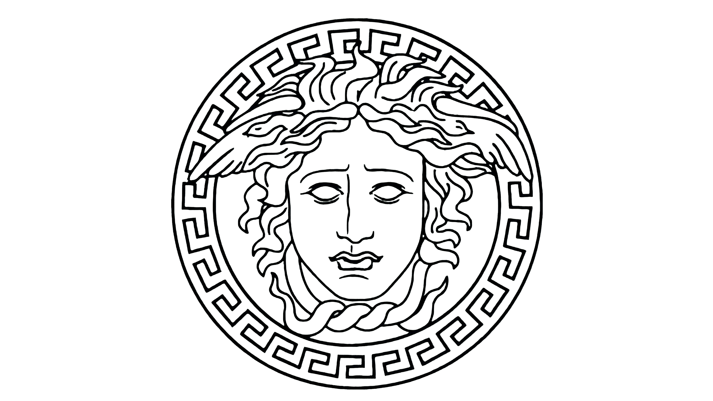
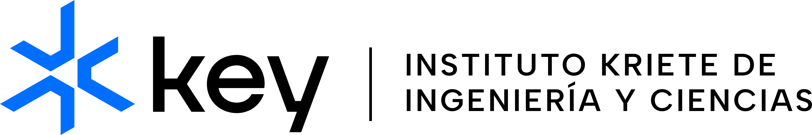
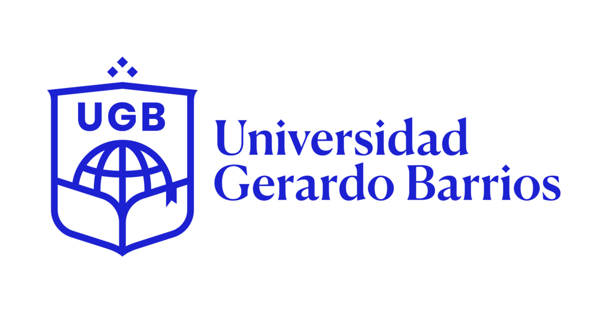
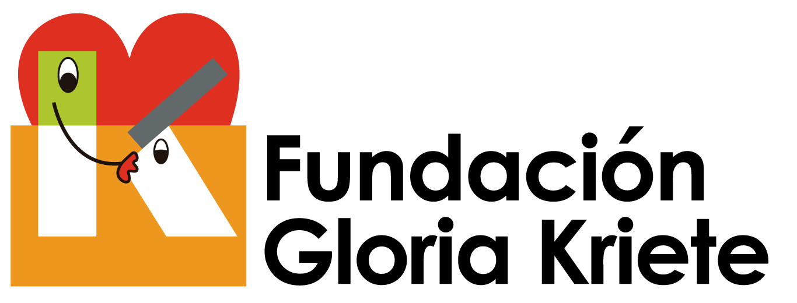

Nuestra inspiración.
Marcas, instituciones y referentes que nos impulsan a hacer las cosas con excelencia, creatividad y propósito.
Lo que admiramos y nos mueve.
Estas marcas e instituciones representan valores que compartimos: audacia, calidad, compromiso con la formación y una visión de futuro.

Versace
La excelencia en el diseño, la audacia en la comunicación y una identidad inconfundible que trasciende generaciones.
Diseño · Identidad
Key Institute
Innovación educativa, formación práctica y un enfoque en las habilidades del futuro que transforma vidas.
Educación · InnovaciónUNIVO
La Universidad de Oriente representa el talento salvadoreño, la investigación aplicada y el vínculo con el desarrollo regional.
Academia · Investigación
UGB
La Universidad Gerardo Barrios es un pilar de la educación superior en el oriente del país, con una sólida trayectoria y proyección social.
Formación · Comunidad
Innovadores digitales
Startups y laboratorios de toda Latinoamérica que están redefiniendo la manera de hacer tecnología con propósito.
Tecnología · Emprendimiento
Fundación Gloria Kriete
Comprometida con el desarrollo social, la educación y el bienestar de las comunidades en El Salvador.
Impacto Social · EducaciónValores que compartimos con nuestros referentes.
Audacia
No tener miedo a romper esquemas y proponer soluciones originales.
Calidad
La excelencia no es un lujo, es un estándar mínimo.
Formación
Creemos en el conocimiento como motor de cambio.
Comunidad
Trabajamos para y con las personas, siempre con respeto y empatía.
¿Compartes nuestra inspiración?
Si te identificas con estos valores, nos encantaría conocerte y colaborar contigo.